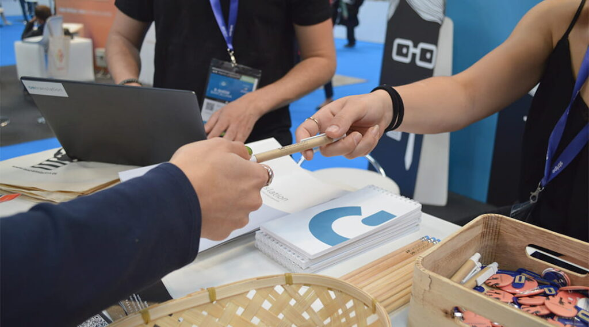
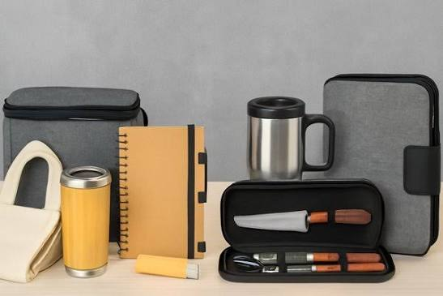
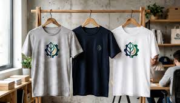
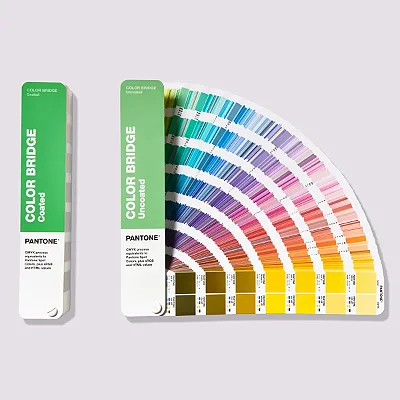
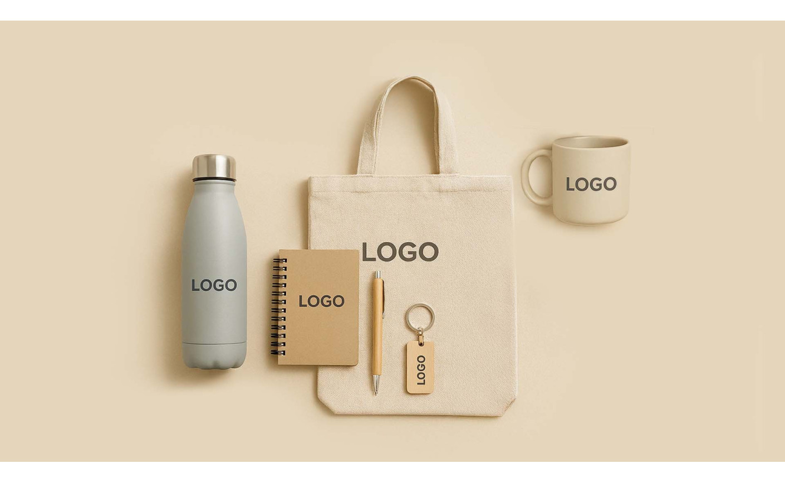

Guia prático
Como escolher brindes para um evento
Ligue a escolha ao público, ao momento de entrega e ao uso depois do evento. Planeie também a distribuição.
Ler guiaEscolha o percurso que corresponde à sua dúvida: definir o artigo e a personalização, preparar a arte ou rever a proposta antes de produzir.
Uso e destinatários primeiro; material e técnica depois.

Ligue a escolha ao público, ao momento de entrega e ao uso depois do evento. Planeie também a distribuição.
Ler guia
Compare utilização, composição e acabamento. O nome do material não resolve sozinho a escolha da personalização.
Ler guia
Relacione o efeito pretendido com a superfície, o desenho, a quantidade e o uso do artigo.
Ler guiaDo original à dimensão final e à referência de cor.
Do ficheiro original à arte aprovada: prepare o logótipo para o artigo e a dimensão escolhidos.
Ler guia
Perceba o que uma referência de cor define e o que só uma prova no artigo permite avaliar.
Ler guiaDa composição proposta à verificação do resultado.

Reveja versão, texto, posição e escala. Distinga o que a maquete confirma do que exige uma amostra.
Ler guiaIdentifique o sinal, reúna evidência e escolha a verificação adequada antes de repetir a produção.
Ler guia